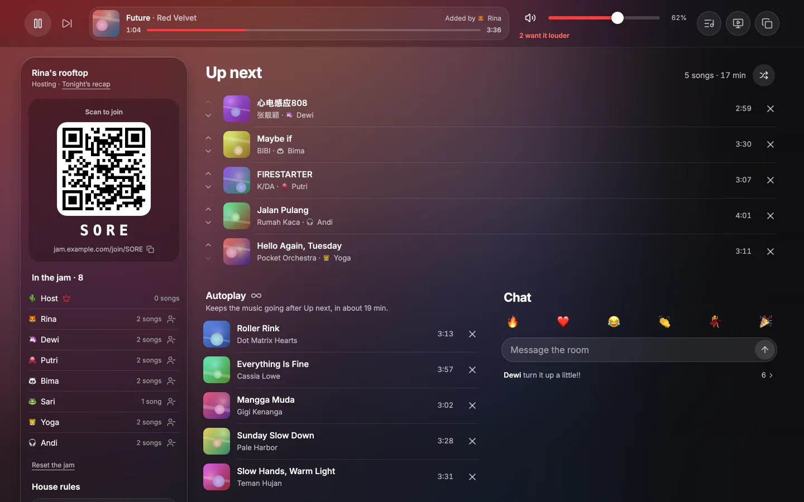
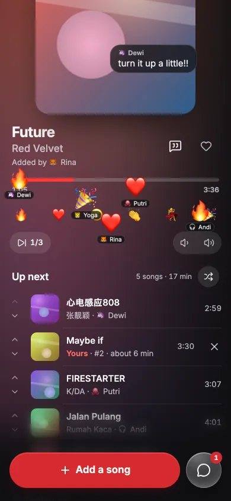
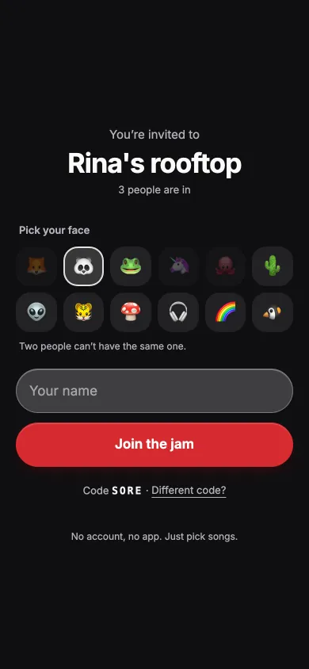
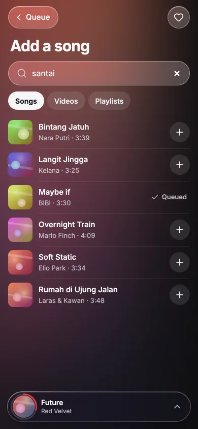

Everyone picks
the music.
One laptop plays YouTube Music through the speaker. Everyone else scans a QR code and adds songs from their phone. No account, no app.
Download for macOS Get the source on GitHubmacOS 14 or later, Apple Silicon or Intel. Not notarised by Apple yet: allow it once.


From any phone in the room.
Guests use the browser already on their phone.



-
Scan. Pick a face. You’re in.
Type a nickname and pick one of twelve faces, and you’re in the jam.
-
Find any song.
Search songs, videos and playlists, even by a line from the lyrics. Or share a link from YouTube Music.
-
Sing along.
When a song has timed lyrics, they follow it line by line.
-
Put it on the TV.
The song, what’s next, reactions and the QR code to join, big enough to read across the room.
Host the next one.
Download the Mac app and a setup window walks you through the rest: YouTube Music, player control, and how guests reach you.